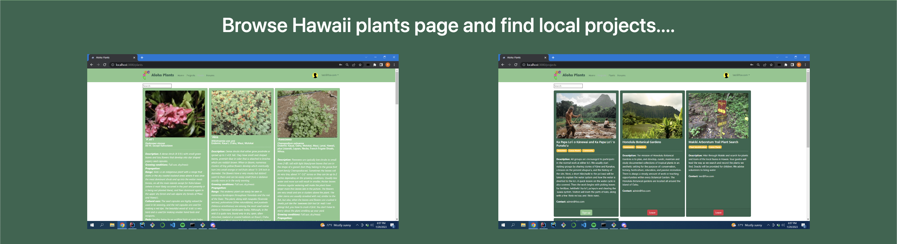
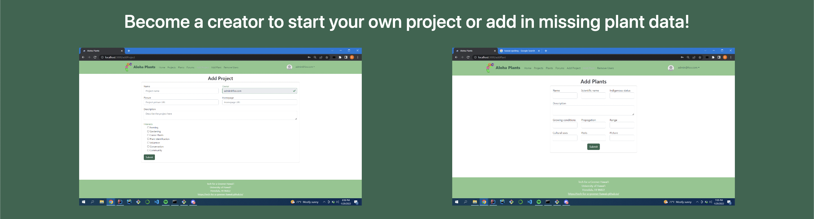
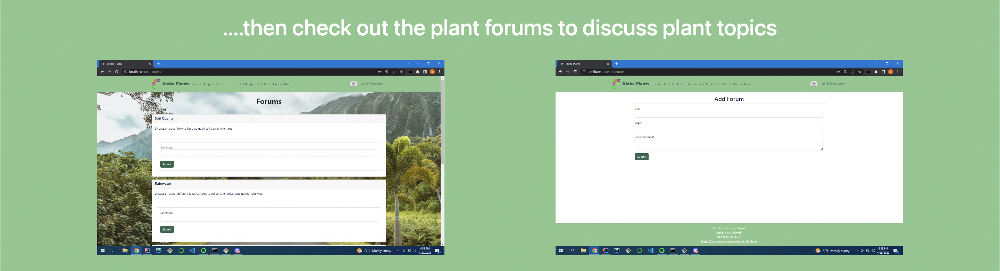

PROJECT github page https://tech-for-a-greener-hawaii.github.io/ PROJECT Website Aloha-Plants
The “Aloha Plants” website allows you to search and view different native plants, forums, and community projects. When searching for native plants it will provide information on how to grow native species and the specific areas to cultivate the plants. This aids the fauna in Hawaii by giving resources to the community to allow them to increase biodiversity by hand. The user will also be exposed to various resources that foster community interaction such as the forums page and community projects page on the website. This will also give the community information to grow their own foods, which will allow the user’s within the community to potentially alleviate the hawaii food crisis.The website will also allow creator users to add in unlogged native plant species to provide users a new native plant variety to grow. This will allow us to log all plant species in a cloud environment, which can be provided to scientific institutes such as the College of Tropical Agriculture and Human Resources and The University of Hawaiʻi at Mānoa Botany Department.
My contributions to the website was creating the functionality such as the add projects, profile settings, and projects page. The project was difficult and required much testing with the MONGO db and meteor application. As the project went on tackling tasks became faster and faster. I’ve learned a lot from developing the project, I learned basic design pattern applications as well as team communication. I now feel confident in tasks involving frameworks and databases. It was fascianting to see the importance of subscriptions and publications in meteor applications. It was also interesting to see the difference between communicating with a SQL db and a MONGO db. How we showcase data in a meteor application requires users to specifically call that db to be viewed on the front end. The specific page must also subscribe to the published database to gain full access otherwise the site will not detect the data. This is similar to how we would pull data from a sql db by calling specific functions that are created to showcase object data. Working with MONGO db helped expand my understanding on db as a whole.
- React - Javascript - Meteor - MONGO DB